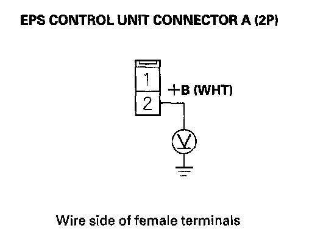
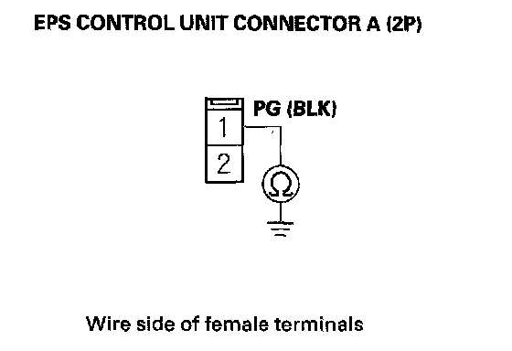
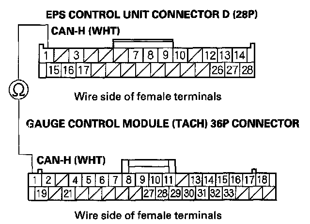
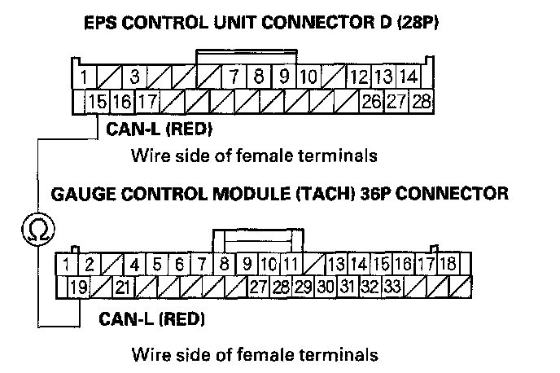

EPS Indicator Does Not Go Off, and No DTCs Are Stored
EPS indicator does not go off, and no DTCs are stored1. Turn the ignition switch OFF.
2. Connect the HDS to the data link connector (DLC).
3. Turn the ignition switch ON (II).
4. Check for DTCs with the HDS.
Are any DTCs indicated?
YES - Troubleshooting the indicated DTC.
NO - Go to step 5.
5. Turn the ignition switch OFF.
6. Check the No.1 (70 A) fuse in the under-hood fuse/relay box.
Is the fuse OK?
YES - Reinstall the fuse, and go to step 7.
NO - Replace the fuse, and recheck. If the fuse is blown, check for a short to body ground in this fuse circuit.
7. Disconnect EPS control unit connector A (2P).
8. Measure voltage between EPS control unit connector A (2P) terminal No. 2 and body ground.

Is there battery voltage?
YES - Go to step 9.
NO - Repair open in the wire between the EPS control unit and under-hood fuse/relay box.
9. Check for continuity between EPS control unit connector A (2P) terminal No. 1 and body ground.

Is there continuity?
YES - Go to step 10.
NO - Repair open in the wire between the EPS control unit and body ground (G402).
10. Check for DTCs in the gauge control module (tach) with the HDS.
Are any DTCs indicated?
YES - Troubleshoot the indicated DTC. If there are no DTCs, the system is OK at this time.
NO - Go to step 11.
11. Disconnect the gauge control module (tach) 36P connector and EPS control unit connector D (28P).
12. Check for continuity between EPS control unit connector D (28P) terminal No. 1 and gauge control module (tach) 36P connector terminal No. 1.

Is there continuity?
YES - Go to step 13.
NO - Repair open in the wire between the EPS control unit and the gauge control module (tach).
13. Check for continuity between EPS control unit connector D (28P) terminal No. 15 and gauge control module (tach) 36P connector terminal No. 19.

Is there continuity?
YES - Check for loose terminals in the EPS control unit connectors, and repair if necessary. If no poor connections are found, replace the EPS control unit.
NO - Repair open in the wire between the EPS control unit and the gauge control module (tach).